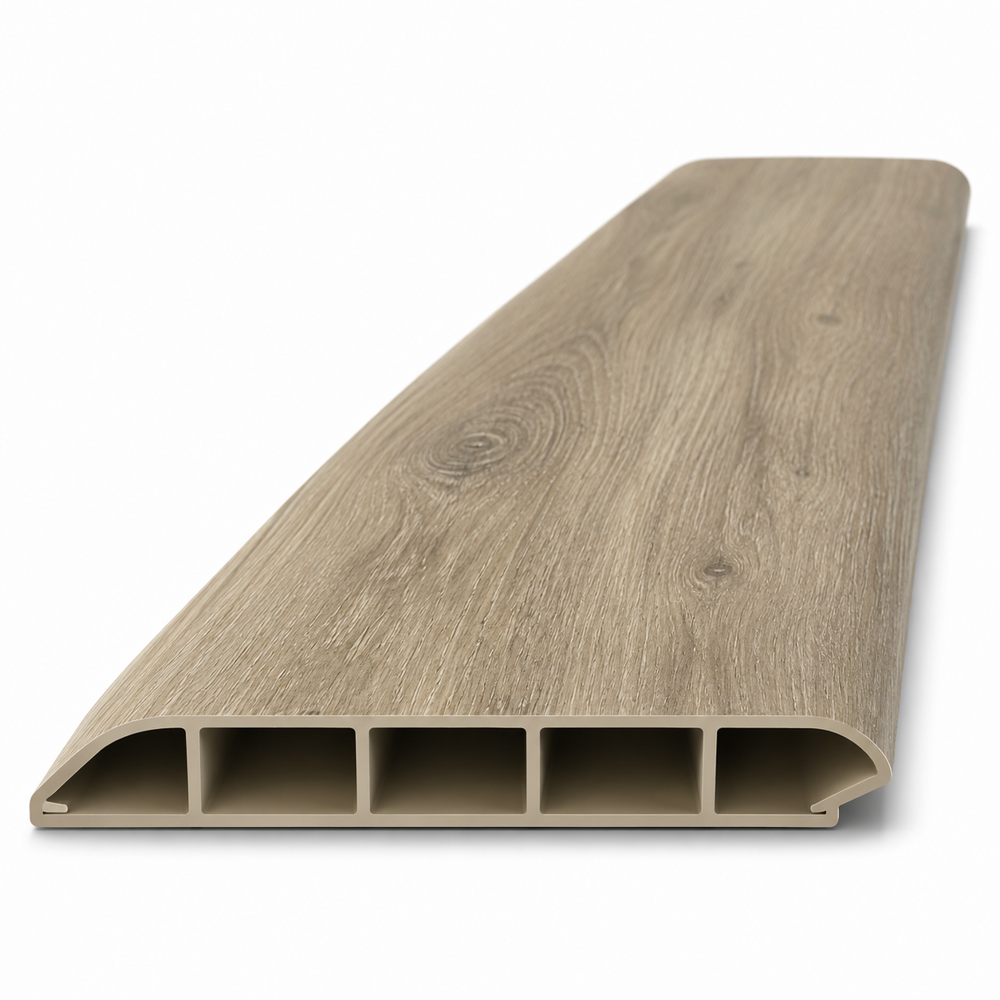

Zócalo para piso SPC
Zócalo de PVC para piso SPC
Zócalo hueco de PVC para completar la terminación perimetral del piso SPC. La ficha reúne los acabados Roble Natural, Roble Ébano, Roble Ceniza, Roble Ámbar Rojizo y Blanco.
- Función
- Terminación perimetral entre piso y pared
- Material
- PVC hueco
- Acabados
- Roble Natural, Roble Ébano, Roble Ceniza, Roble Ámbar Rojizo y Blanco
- Formato
- Tira; confirmar largo y presentación al consultar
Disponibilidad FORMA: Consultar disponibilidad
Consultar precio
Consultar por WhatsAppConfirmamos precio, disponibilidad y entrega antes de cerrar el pedido.
Instalación y preparación
La base debe estar limpia, seca y nivelada. Confirmá con FORMA el sistema de fijación indicado para la pared y el encuentro con el piso.